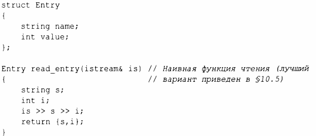
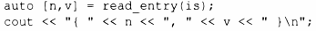
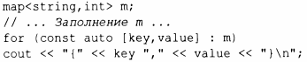
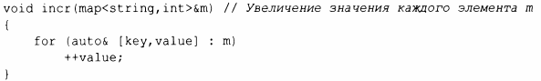
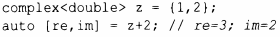

⇐3.6.2 Возврат значения Содержание 3.7 Советы⇒
Функция может возвращать только одно значение, но это значение может быть объектом класса со многими членами. Это позволяет нам эффективно возвращать из функции несколько значений. Например:
Здесь {s,i} используется для создания возвращаемого значения Entry. Аналогично можно "распаковать" члены Entry в локальные переменные:
Конструкция auto [n,v] объявляет две локальные переменные n и v с типами, выведенными из возвращаемого типа read_entry(). Этот механизм придания локальных имен членам объекта класса называется структурным связыванием (structured Ьinding).
Рассмотрим еще один пример:
Как обычно, можно декорировать auto с помощью const и &. Например:
Когда структурное связывание используется для класса без закрытых данных, легко увидеть, как выполняется такое связывание: для связывания должно быть определено столько же имен, сколько имеется нестатических членов-данных класса, и каждое введенное имя связывается с соответствующим членом. В качестве объектного кода по сравнению с явным использованием составного объекта нет никакого отличия; использование структурного связывания - просто иное выражение все той же концепции.
Можно также работать и с классами, в которых доступ осуществляется через функции-члены. Например:
Объект типа complex имеет два члена-данных, но его интерфейс состоит из функций доступа, таких как real() и imag().Отображение complex <double> на две локальные переменные, такие как re и im, осуществимо и эффективно, но техника, позволяющая это сделать, выходит за рамки данной книги.